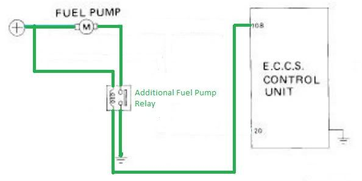

-
The 5 pages contain mostly useless misunderstandings because there are many ways to wire many fuel pumps, and what Nissan did originally was most likely a work-around.
Personally, yes, it changed my life. What are you wanting to do?PulseCode wrote: Does anyone have the diagram from the OP? Possibly not, but several versions have been recreated since.
PulseCode wrote: Have we gained any clarity from this 5 page post? -
Thank You Jeffsly for your response. I just want my NA2T conversion to run right. Since Code 22
is the only thing popping up on the ECU during diagnostics, I'd like concise info specifically on what/
where to check first for fried wires and a wiring diagram that has reached group concensus for reliability.
Thanks.Everything is Meaningless. -
I don't know anything in particular about your Code 22, but here's my understanding of things, all of which has been said here or elsewhere, but not always clearly.
With anything drawing more current than the stock pump (in good condition), both the fuel pump connector beneath the carpeting inside the hatch, and (via current discussion in another active thread) the wiring pass-throughs used from the pump itself through the top plate/fuel tank have been suggested as cause for the fried wiring.
So then a few things: With everything stock, you should be able to splice at the ECCS according to a diagram I posted in pg 3 I think to always get full voltage to the pump without changing anything else, relying on the existing fuel pump relay.
BUT, I think the common group concensus involves adding another relay somewhere in the hatch area like so
.
Here the stock fuel pump relay is ignored, and you tap into the hot wire to the fuel pump in the hatch area, and cut the pin 108 wire from the ECCS to switch the new relay, and provide a convenient local ground to the fuel pump on the switched side. If the wire is suspect, a new +12V source wire needs to be run in place of the old one, but the ground from the relay is short/convenient. Can't go too wrong with 10ga. for those. -
Thanks, Jeffsly for the clarification. Though the diagram on page 4 posted by JSM
appears to be 90 degrees turned, It looks identical to the one you just posted, correct?Everything is Meaningless. -
Functionally speaking, yes, but actually no. That diagram shows the relay controlling the pump by switching the +12V side, while mine shows controlling it by switching the path to ground on/off the way Nissan wired it. But if you're completely rewiring the pump, as long as the relay coil ground is from ECCS pin 108, either way should work. So why actually no then?PulseCode wrote: Thanks, Jeffsly for the clarification. Though the diagram on page 4 posted by JSM
appears to be 90 degrees turned, It looks identical to the one you just posted, correct?
Stock pump was wired to have +12V connected to the pump always, then ECCS pin 108 could provide the ground to turn it on, or ECCS pin 20 could provide ground through the stock fuel pump relay (passenger side B-pillar) to turn it on. What I drew most recently maintains that stock relay (although I didn't show it) and its ability to turn the pump on whenever pin 20 is telling it to. All indications are this doesn't matter, but I think most people who have added the relay for full power have done so by controlling the ground side, leaving the stock pump relay in place to do its thing. So then the crappy version of the full diagram would be like this, where the new relay is wired just like the existing one is.
-
[quote]JeffSly wrote:to be foolproof as other people pointed out bridge 20 with 108 but otherwise looks goodOriginally posted by PulseCode
-
:lol: As you pointed out in 2006 I believe. Just a whole lot of clutter here since.G-E wrote: to be foolproof as other people pointed out bridge 20 with 108 but otherwise looks good
-
[quote]JeffSly wrote:yea I am amazed how many threads there are here that haven't progressed any while I was gone… or it's like reading that last page eureka moment that someone had already :POriginally posted by G-E -
Re:
Correct me if I am wrong, the original image you had posted with this comment is no longer showing, but this is what you meant correct? It seems far simpler than going through and wiring in a new relay, if my understanding is correct here.G-E wrote:
take the hot side and connect it to the relay's coil hot and switched hot directly, then run the switched ground to the pump hot and the coil ground to the ecu.
Build thread http://z31performance.com/showthread…-Paint-done-eh -
Re: Re:
[quote]stufferton wrote:Yarp…Originally posted by G-E -
ok. so now that I wired in a nice and healthy 10ga wire from the front with a 15 amp litefuse right next to the battery, I'm going to drill a tiny hole in the waterproof fuse holder and skim the top with some hard resin so that it forms a clear window so that I can see if the fuse is blown without pulling it from its nested location.
But now I have a situation with the blue connector that has the Black and Blue/White wire. It seems as though they are both grounds or something? For some reason I can't get my relay coil to trigger by wiring each side into those wires. But one of them should be supplying power, no? To feed the pump? Instead, if i put my circuit tester to the power wire, and probe the black wire on the 5 second prime when flipping the key over, the circuit tester starts to moan/creek (its audible and visual). So that would indicate the black wire is the ECU ground phasing wire, right?
So doesn't that leave the blue as the power wire? Since it also seems to feed power to the sending unit control box? It doesn't seem to trip the circuit tester when connecting to ground and probing the blue power wire.
why blue no has 12v? pump worked before. I'm asking because the 10ga power wire I ran is too purdy to cut back and tap into. I don't want to start making splice connections when I does not has to.
EDIT: OEM fuel pump 12v blue/white wire works better when fuel pump fuse is actually IN the fuse box. I removed it to test my turbo timer countdown, and didn't put it back in after everything was all done. Pump is nice and pumpy now. -
I did something similar with my m30 ecu. The variable voltage wire never goes below 9v and Nissan standard relays only need 9v to function. (maybe a little more when they are cold)
I spliced the variable wire with the other ecu wire for the relay to help it pull the relay open on cold start ups (when the relay may be a little stubborn for 9v) and then ran the splice to the relay.
Fuel Fuse>>> Relay Coil>>> variable (104) spliced with relay trigger (18)
Fuel Fuse>>> Relay Closed>>> Fuel Pump>>> Ground

It looks exactly just like the picture stufferton posted except for the M30 uses pins 104 and 18.
I have a Fuel Pressure Guage on and before the mod I noticed that even if I pinched the return line my idle pressure barely stayed above 30PSI. This is what made me want to do the mod because I was concerned about it not being able to keep up at idle once I go to a 3.3 block and or e85. since it only provided JUST ENOUGH and Nothing more on a gasoline 3.0.
After the relay mod my idle pressure was 36 and if I pinched the return line it would climb like it should.10:1 VG33E Swap 200HP
M30 ECU with N60 MAF
Pathfinder Intake, Euro Cams, Russ Cam Gears, Headers and Gibson Cat Back -
i know this sounds stupid but i can do all the wiring no problem but when it comes to knowing like what a relay looks like or what relay your talking bout so many different things run across my mind on what it actually is but the stupid part is would help alot if you had a photo maybe of the relay for people like me who dont know what it looks like. but thank you so much for taking to write out how to do this so informative im just lost on what the relay looks like.
1988 300zx gl n/a slowly converting to turbo
70% mechanicaly restored -
.........."If your car cant do a burnout from a 60mph rolling start, then your engine needs more work."
"Nitrous doesn't blow up motors; Idiots with nitrous blow up motors."
Shooting for 500whp

-
I know this thread is really old, but it took me far too long today to figure out how to wire my pump. Yellow wire from Pin 20 (only!) to blue fuel pump relay coil negative. New wire +12V from battery to both blue relay coil positive and relay switch positive. New wire from relay switch negative to fuel pump positive (blue/white wire on car-side of fuel pump harness connector). New wire from fuel pump negative to body ground. Third wire on pump not used.
Initially had Pins 108 and 20 to the coil negative, but this caused my pump to run whenever the battery was connected. It had been a long evening at this point and I suppose it's possible I had the wrong wire. With only wire 20 powering the coil, the fuel pump primes 5 sec, shuts off, and runs when the engine runs. Went for a test drive from stone cold to running temp and the pump worked as it should. Hope this helps someone.http://z31performance.com/showthread…-My-86-Project
VG33 HE351. "No seriously, it's almost done."


Copyright © 2006–. All rights reserved. Privacy Policy